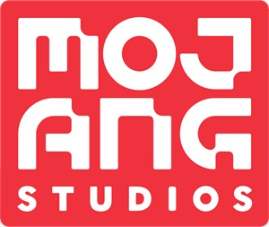
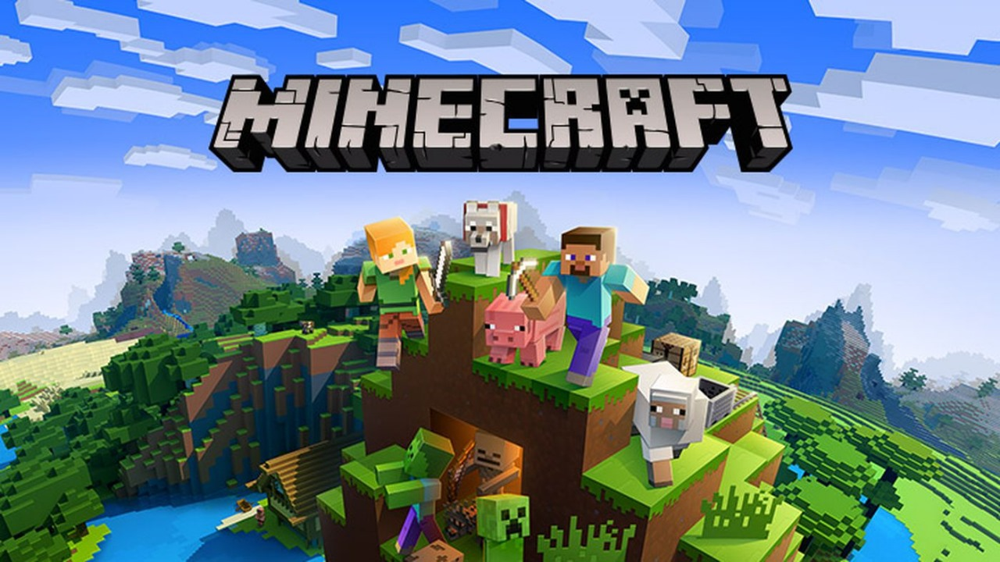

O que é Minecraft?
Minecraft foi criado em 2009 por Markus Persson junto ao estúdio Mojang,
e depois vendido para a Microsoft em 16/09/2014
desde o lançamento do jogo, já foram feitos mais de 1 bilhão de downloads destes complementos
desenvolvidos por usuários, o que rendeu aos seus criadores um total de US$ 350 milhões.

``Como se consiste o jogo?´´
Minecraft é um jogo Sandbox sobrevivência onde você e se quiser
jogar com seus amigos com muitos modos de personalização
